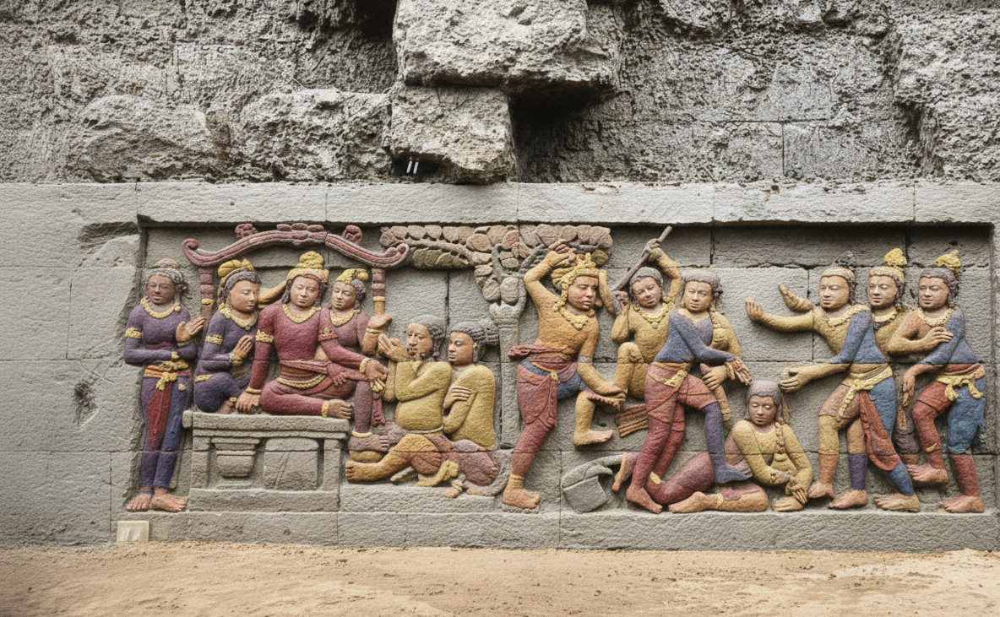

Daya Tarik
Stupa, Arca & Relief
Kenali detail konstruksi batu andesit tanpa perekat semen serta makna mudra pada setiap arca Buddha.
Lihat Daya Tarik
Mahakarya arsitektur Buddha abad ke-8 di jantung Pulau Jawa. Saksikan harmoni batu andesit, ribuan panel relief bersejarah, serta panorama fajar di kaki Pegunungan Menoreh.
Klik setiap tingkatan di bawah ini untuk melihat makna filosofis dan struktur arsitektur yang membentuk piramida berundak Borobudur.

Melambangkan dunia yang masih terikat oleh hawa nafsu dan hukum sebab-akibat (karma). Pada bagian kaki candi tersembunyi 160 panel relief Karmawibhangga yang menggambarkan perilaku manusia serta konsekuensinya.
Pilih pengalaman yang ingin Anda telusuri lebih jauh melalui halaman khusus yang telah kami siapkan.
Kenali detail konstruksi batu andesit tanpa perekat semen serta makna mudra pada setiap arca Buddha.
Lihat Daya Tarik
Nikmati kurasi fotografi panorama Borobudur dengan latar Gunung Merapi dan Merbabu dalam mode lightbox interaktif.
Buka Galeri
Hitung estimasi biaya kunjungan, pilih paket tur heritage atau sunrise, dan dapatkan simulasi e-tiket secara instan.
Pesan TiketAtur jadwal kunjungan pagi atau tur edukasi budaya bersama pemandu berpengalaman untuk pengalaman yang tak terlupakan.
Mulai Reservasi Sekarang